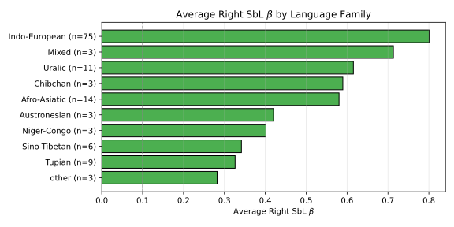
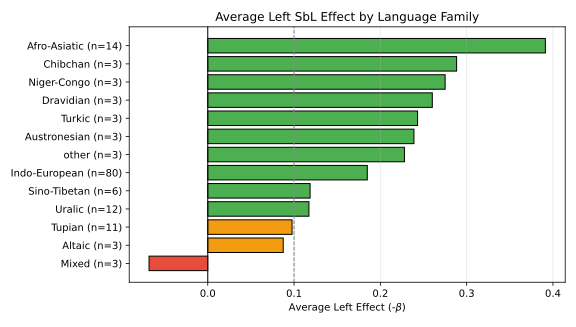

This chart aggregates the Short-Before-Long principle across WALS language families. For the Left side, slopes are negated so that a positive value consistently means compliance with the SbL principle. Only families with at least 3 languages are shown.

